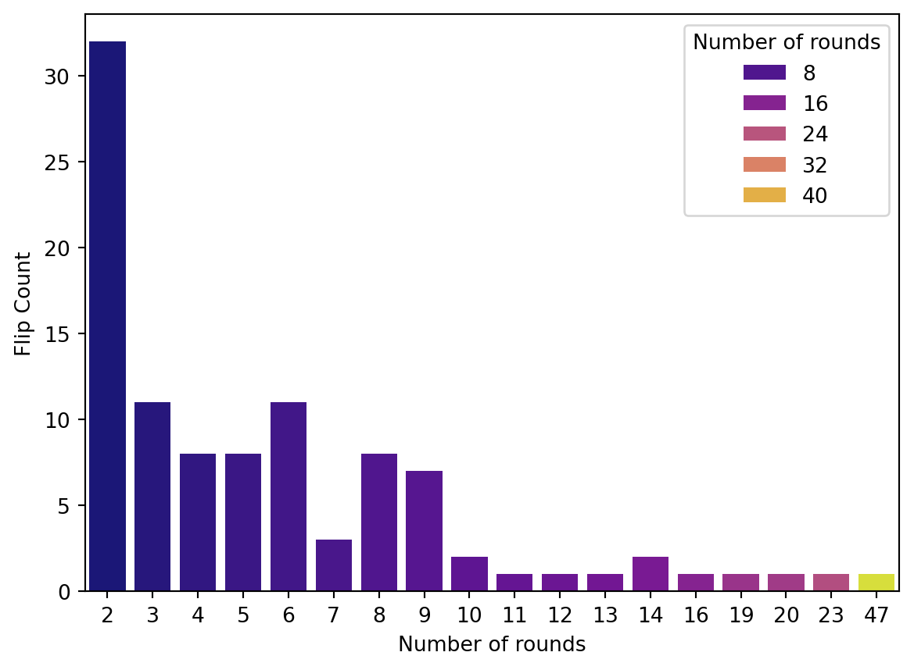
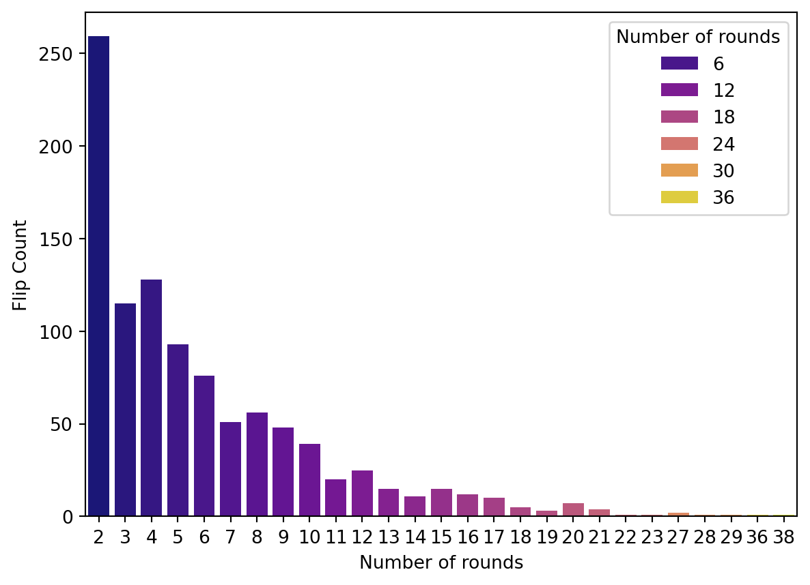

Code
start = 0
x = []
n = 50
p=[0.5,0.5]
for i in range(n):
step = np.random.choice([0,1],p=[0.5,0.5])
start = start + step
x.append(start)
Probability theory analyzes random events and quantifies the likelihood of various outcomes. To understand probability theory, first, we need to define some terms:
Sample Space: The set of all possible outcomes of a random experiment. \(\Omega\)
Event: A subset of the sample space. \(E \subset \Omega\)
Probability: A measure of the likelihood that an event will occur, usually expressed as a number between 0 and 1. The probability of an event E denoted \(P(E)\), \(P(E)\le0\) for every E and \(P(\Omega)=1\)
Moreover, we have
Joint Probability: The joint probability of A and B is when event A and B are occurring at the same time, denoted \(P(A, B)\)
Conditional Probability: The probability of event A occurring given that event B has already occurred, denoted \(P(A \mid B)=\frac{P(A, B)}{P(B)}\)
Independence: Two events are independent if the occurrence of one does not affect the probability of occurrence of the other.
Events A and B are independent if \(P(A, B)=P(A)P(B)\)
Events A and B are conditionally independent given C if \(P(A, B\mid C)=P(B \mid A, C)P(A\mid C)=P(B\mid C)P(A \mid C)\)
Random variables are a key concept in probability theory, representing quantities whose values are subject to randomness. Independent and identically distributed (i.i.d.) random variables are those that sampled from the same probability distribution and are mutually independent, for example, coin flips are assumed to be iid.
Random Variable: A variable whose value is subject to variations due to chance.
Discrete Random Variable: Takes on a countable number of distinct values.
Continuous Random Variable: Takes on an uncountable range of values.
A Markov chain is a mathematical system that experiences transitions from one state to another based on the probability theory. It’s a type of stochastic process that is memoryless, meaning the next state depends only on the current state and not on the sequence of events that preceded it.
\(P(X_n = i_n \mid X_{n-1} = i_{n-1}) = P(X_n = i_n \mid X_0 = i_0, \, X_1 = i_1, \, \dots, \, X_{n-1} = i_{n-1})\)
States: These are the distinct positions or conditions in which the system can exist. A Markov Chain’s set of states is often denoted as \(S\).
Transitions: The movement from one state to another. These transitions are governed by probabilities.
Transition Probability: The probability of moving from one state to another. These probabilities are often represented in a matrix known as the transition matrix.
Transition Matrix: A square matrix where the element at the \(i\)-th row and \(j\)-th column represents the probability of moving from state \(i\) to state \(j\).
Initial State Distribution: A vector that represents the probabilities of starting in each state.
In this scenario, whenever you go for a walk, each second, you randomly decide whether to think (and stay still) or to walk (and take one step forward). After n seconds, how many steps would you have taken?
start = 0
x = []
n = 50
p=[0.5,0.5]
for i in range(n):
step = np.random.choice([0,1],p=[0.5,0.5])
start = start + step
x.append(start)We simulate the scenario using Markov chain and visualize it.
plt.plot(x)
plt.xlabel('Time at n seconds',fontsize=10)
plt.ylabel('Steps',fontsize=10)
plt.title("Think and walk")Text(0.5, 1.0, 'Think and walk')It looks like we staied at step 1 for a while; let’s take a look at the distribution of how long we thought at each step.
data_state = pd.DataFrame({'Steps':x})
data_occ = pd.DataFrame(data_state.value_counts('Steps')).rename(columns={0:'Count'})
data_occ['Count'] = data_occ['count']
sns.barplot(x=data_occ.index,y=data_occ['Count'],palette='plasma', hue=data_occ.index)
plt.ylabel('Seconds of thinking')Text(0, 0.5, 'Seconds of thinking')We can easily prove that the probability of being in a certain state, i.e. an integer number of steps, at time t+1, only depends on the state at time t. This demonstrates the property of the Markov Chain. Now, let’s think about a more interesting problem but with the same Transition Matrix: ↙️
We simulate the problem with 100 rounds of flipping, each round ends at when we get two consecutive heads.
from random import random
def coin_chain(n):
x = []
for i in range(n):
count = 0
steps = 0
while count < 2:
steps += 1
if random() < 0.5:
count += 1
else:
count = 0
x.append(steps)
return xFlips distribution
x = coin_chain(100)
data_state = pd.DataFrame({'Number of rounds':x})
data_occ = pd.DataFrame(data_state.value_counts('Number of rounds')).rename(columns={0:'Count'})
data_occ['Count'] = data_occ['count']
sns.barplot(x=data_occ.index,y=data_occ['Count'],palette='plasma',hue=data_occ.index)
plt.ylabel('Flip Count')Text(0, 0.5, 'Flip Count')
Average of flips:
np.mean(x)6.06Increase the number of rounds to see what’s the average of filps we get:
x = coin_chain(1000)
data_state = pd.DataFrame({'Number of rounds':x})
data_occ = pd.DataFrame(data_state.value_counts('Number of rounds')).rename(columns={0:'Count'})
data_occ['Count'] = data_occ['count']
sns.barplot(x=data_occ.index,y=data_occ['Count'],palette='plasma',hue=data_occ.index)
plt.ylabel('Flip Count')Text(0, 0.5, 'Flip Count')
Average of flips:
np.mean(x)5.946Even more rounds!
x = coin_chain(5000)
data_state = pd.DataFrame({'Number of rounds':x})
data_occ = pd.DataFrame(data_state.value_counts('Number of rounds')).rename(columns={0:'Count'})
data_occ['Count'] = data_occ['count']
sns.barplot(x=data_occ.index,y=data_occ['Count'],palette='plasma',hue=data_occ.index)
plt.ylabel('Flip Count')Text(0, 0.5, 'Flip Count')Average of flips:
np.mean(x)6.0664We can see that the answer is 6 rounds. The simulation process used here is known as Monte Carlo simulation, which is a very important technique in machine learning.